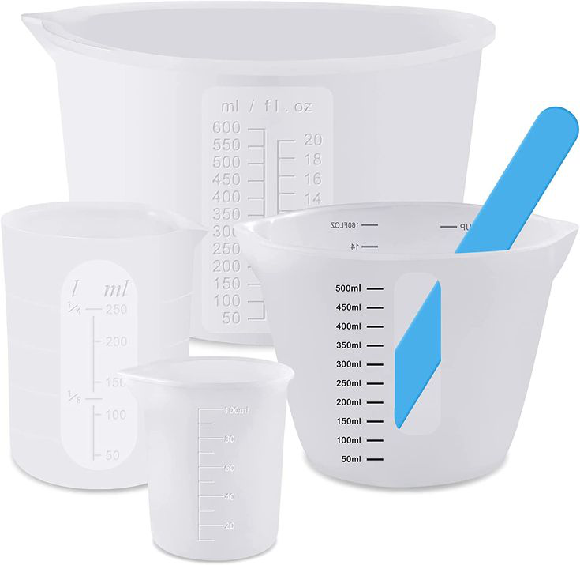
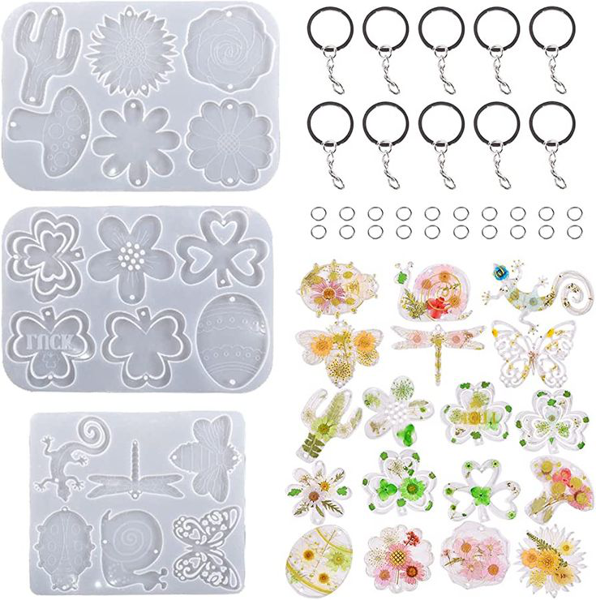

Jewelry and Resin
Resin Casting 101: The 5th Art of Jewelry making
Author: Ladele Simi
12th July, 2025

Create stunning pieces by embedding flowers, glitter, or even photographs in resin! This technique opens up a whole new world of creativity.

To begin, gather your materials: you'll need epoxy resin, a hardener, molds for shaping your pieces, and various embellishments like glitter or dried flowers for added visual interest. The process involves mixing the resin and hardener according to the manufacturer's instructions before pouring it into your chosen mold.

When exploring jewelry making techniques, consider these ten best practices: start with small projects to build confidence; experiment with colorants; incorporate textures using silicone molds; use release agents for easy demolding.

Ensure proper ventilation when working with resins; allow ample curing time for durability; mix thoroughly to avoid bubbles; layer different colors for depth; finish pieces with sanding and polishing for a professional look; and finally, don’t hesitate to seek inspiration from established artists. By mastering these foundational steps in how to cast resin effectively, you’ll be well on your way to creating stunning jewelry pieces that reflect your personal style while embracing the artistry of resin casting.
We'd love to hear your thoughts below